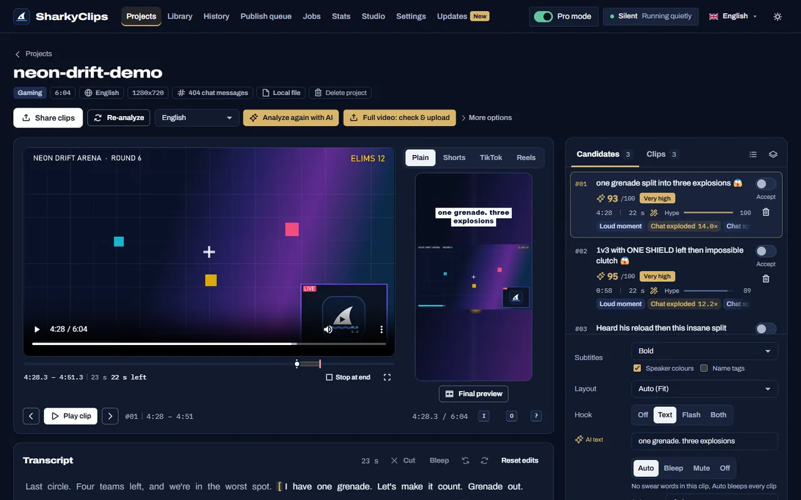

配信者向けの無料アプリ
配信を入れれば、投稿できるクリップが出てくる。
SharkyClips は配信の録画から見どころを見つけ、YouTube Shorts、TikTok、Instagram Reels 向けの縦型クリップにします。すべて自分の PC で動きます。
- 無料・オープンソース
- アカウント不要、クラウドなし
- 11 言語
- Windows 10 / 11

使い方
3 ステップ。その間の編集は SharkyClips がやります。
配信を追加
動画ファイルをドロップするか、Twitch・YouTube・Kick のリンクを貼り付けます。OBS フォルダーの最新の録画を取り込むこともできます。
SharkyClips がクリップを作る
盛り上がった場面、面白い場面、熱い場面を見つけ、きれいにカットし、字幕を付け、悪い言葉にピー音を入れ、タイトルを書きます。
確認して共有
クリップを見て、好きなところを直し、YouTube Shorts、TikTok、Instagram Reels に共有します。
動いている様子
現在のバージョンの短いツアーです。デモ配信で作りました（実在の人物やゲームは入っていません）。



配信者のために
見どころを見つける
大きなリアクション、笑い声、チャットの盛り上がり、ゲーム内の出来事が、順位付きのクリップ一覧になります。
ピー音、確認済み
悪い言葉は 11 言語でピー音が入り、完成したクリップはもう一度聞き直されます。
共有ボタンは 1 つ
YouTube Shorts、TikTok、Instagram Reels に、それぞれ合った説明文と制限で。
TikTok ヘルパー新機能
小さなブラウザー拡張機能が TikTok の投稿内容を入力します。確認して投稿ボタンを押すのはあなたです。
写真スライドショー新機能
2〜20 枚の写真を、ラベルと音楽付きの縦型ビフォーアフター動画にします。
あなたの外観新機能
アプリの 4 つの外観、ダークとライト、そして自分の色。
SharkyClips の YouTube の使い方
YouTube へのアップロードは任意です。設定 → YouTube でチャンネルを接続すると、SharkyClips は公式の YouTube API サービスを次のことだけに、あなたが求めたときだけ使います：
| 操作 | 権限（スコープ） | タイミング |
|---|---|---|
| あなたが用意したクリップのアップロード（タイトル、説明、タグ、公開設定、公開日時、再生リスト、サムネイル）。情報や公開日時の変更、早めの公開、公開前に取り消したときの削除。接続中のチャンネルの表示。SharkyClips でアップロードした動画の再生回数、高評価、公開状態の読み取り | youtube | 今すぐ公開を押したときやクリップを予約したとき（PC がオンの間に前もってアップロード）、ライブラリで編集・取り消ししたとき、設定を開いたとき、そしてアプリの動作中に約 6 時間ごと |
| 同じ動画の平均視聴率を読み、どの冒頭（フック）が視聴者を引き留めるかを学ぶ | yt-analytics.readonly | フックテストの一部としてアップロードし、公開から 48 時間たったクリップだけ |
このデータはあなたのコンピューターにだけ保存され、結果を表示し、あなたのチャンネルに合わせてクリップのスコアを改善するためだけに使われます。SharkyClips にはサーバーがありません。開発者があなたの YouTube データを受け取ったり、見たり、共有したりすることはなく、広告にも一切使われません。SharkyClips が他の人のチャンネル、あなたのコメント、登録者、視聴履歴を読むことはありません。変更や削除をするのは SharkyClips でアップロードした動画だけで、それもあなたが求めたとき（予約したクリップを編集・取り消すときなど）だけです。
接続はいつでも設定 → YouTube で解除できます（Google のアクセストークンが取り消されます）。または Google アカウントの権限からアクセスを削除できます。接続すると YouTube 利用規約に同意したことになり、Google は Google プライバシー ポリシーに従ってデータを扱います。プライバシーポリシーと利用規約の全文もお読みください。
無料、オープン、プライベート
SharkyClips は MIT ライセンスです。サブスクなし、クレジットなし、透かしなし。アカウントも追跡もなく、共有しない限り動画は PC に残ります。ソースコードとすべてのバージョンは GitHub にあります。